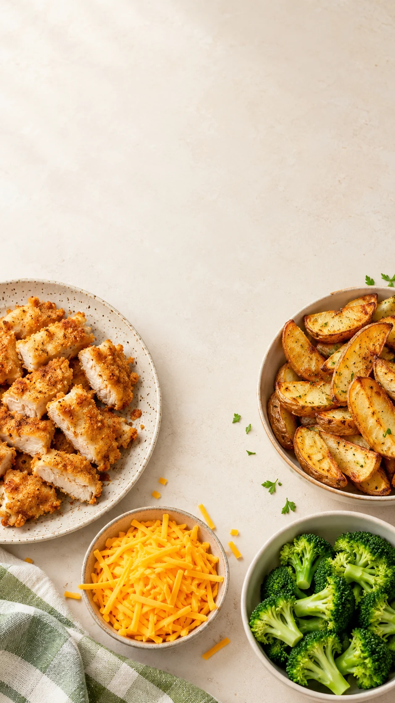
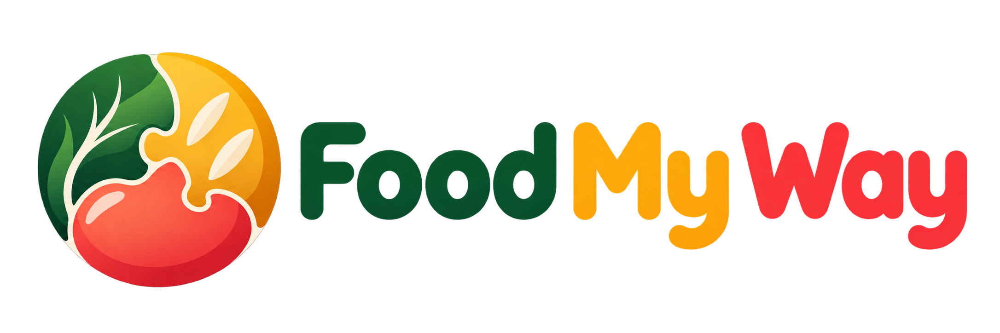

Preference worksheet
Capture accepted foods, textures, temperatures, brands, mixed-food preferences, allergies, and household constraints.
For picky adults & the households they feed
Keep the foods you enjoy. Get a flexible 14-day plan, familiar recipes, and simple swaps for the ingredients and textures you would rather skip.
One-time $19 purchase, plus applicable tax. Digital kit + printable PDF. 14-day refund policy.

Less guessing. Less waste.
You need a realistic starting point built around foods you already buy and enjoy. Use the plan as a starting point, swap what does not work, and keep components separate when that makes dinner easier. No pressure to eat something you dislike.
Inside the kit
Capture accepted foods, textures, temperatures, brands, mixed-food preferences, allergies, and household constraints.
Breakfasts, lunches, dinners, and snacks that deliberately reuse ingredients and leftovers.
Adjust taste, texture, ingredients, or preparation time without abandoning the whole meal.
Clear quantities, timing, separated-component options, allergen reminders, and low-energy alternatives.
Week 1 and Week 2 ingredient lists, plus space for substitutions. Adjust quantities to your household and pantry.
Use "liked it," "might try again," and "not today" notes to build a better next week.
A look inside
These examples come from the Kit content. Start with one day, keep what works, and change the rest.
Content preview, not a screenshot. Meals are ideas, not a prescribed diet.
Mixed foods not your thing? Serve components in separate piles or small bowls.
The food bridge idea
Start with a familiar food and offer one optional nearby variation. This is not a forced progression; it is a way to make the next choice manageable.
Made for real households

Keep going after the kit
The free Food My Way app lets you create recipes, swap ingredients, and save up to three recipes. The $19 Kit adds a structured two-week starting plan, printable PDF, grocery planning lists, and reusable tools.
Try Food My Way freeQuestions
No. This is a practical planning resource, not medical advice or treatment. Discuss significant feeding, growth, swallowing, allergy, or nutrition concerns with a qualified professional.
No product or substitution is universally allergy-safe. Always check current labels and cross-contact information for the products you use.
Pay securely through Stripe, then use the same email to request your sign-in link. After payment is confirmed, you can open the interactive kit and download the PDF. Keep your receipt and check your spam folder if the sign-in email does not arrive.
If the kit is not useful for your household, contact support@foodmyway.app within 14 days of purchase. See the terms for full details.
Make the next two weeks easier
Your 14-day starting plan, 16 familiar recipes, two grocery planning lists, worksheets, and swap guidance. Interactive digital kit + printable PDF.
Get the Kit — $19One-time $19, plus applicable tax. Secure Stripe checkout. No subscription. 14-day refund policy.Already purchased?
Use the same email entered at Stripe checkout. We will send a one-time sign-in link to access your kit. Founding members also have Kit access. Need help? Contact support.